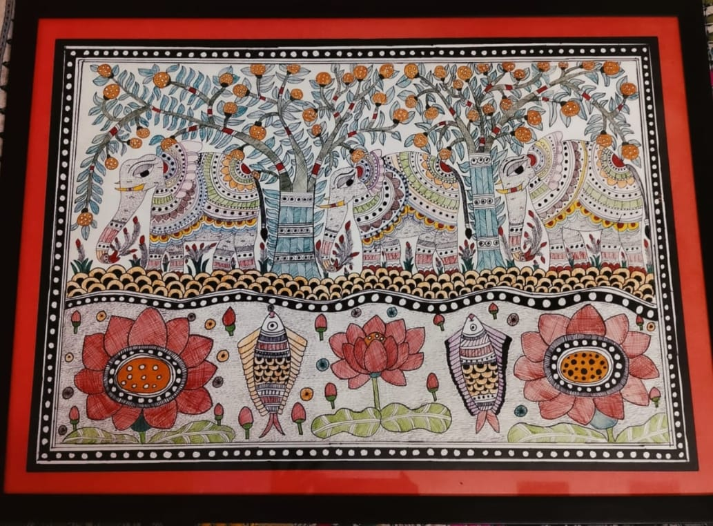
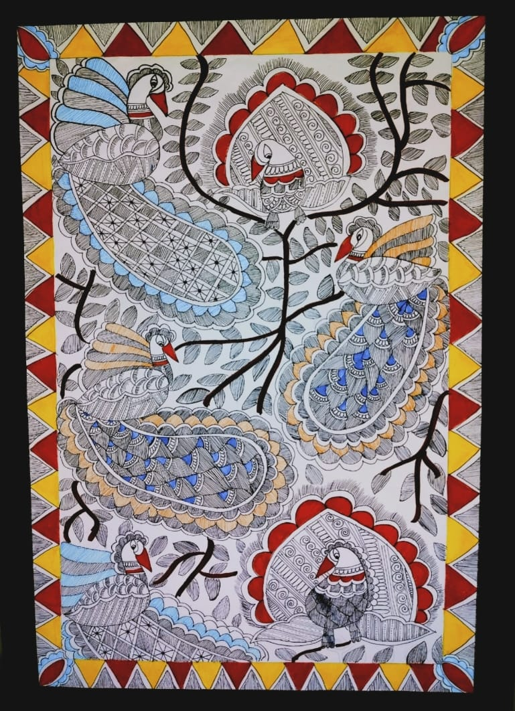

A small message to DR. MONIKA

Beneath them, the sacred lotus blooms, symbols of purity rising from the earth, while fish glide gracefully, embodying the abundance and flow of existence. The delicate patterns and vivid hues create a tapestry where nature and spirit entwine, celebrating the eternal dance of creation, harmony, and rebirth in a language as old as time.

The painting captures a moment of tranquility and harmony in nature, illustrating the interconnectedness of life. The rich colors—deep blues, greens, and golds—evoke a sense of vitality and celebration, inviting viewers to appreciate the beauty of the natural world. This artwork not only reflects the skill and creativity of the artist but also serves as a reminder of the importance of harmony and coexistence in our environment.